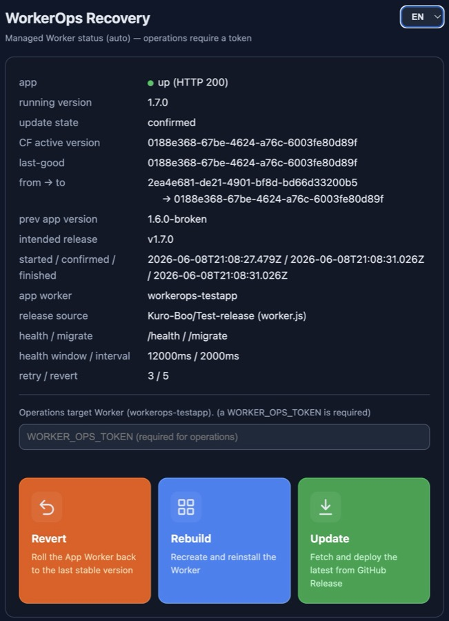

Cloudflare Worker を、
安全に・戻せる形で自己更新させる番人。
任意の Worker の前段に置く小さな Worker。更新の指示・デプロイ後のヘルス検証・失敗時の自動 revert・復旧画面を引き受け、利用者に Cloudflare を直接触らせません。実行時の依存はゼロ、成果物は gzip で約 8 KiB。

なぜ必要か
Cloudflare Workers では、動いている Worker は自分自身を安全にロールバックできません。新しい版が壊れていると、ロールバックを実行する主体(その Worker 自身)ごと壊れるからです。
WorkerOps は「常に生きている小さな番人」として app の前に立ち、更新・検証・自動 revert・復旧をすべて引き受けます。番人自身はめったに更新しないので、app が壊れても戻す手段が残ります。
更新は GitHub Release の worker.js から取り、Cloudflare の Versions / Deployments API で配ります。
できること
転送
自分の予約パス(既定 /__workerops__)以外を app へ転送。app が止まっていれば、メンテ画面と復旧画面を出します。
更新
リリース元から新しい worker.js を取り、Cloudflare API でデプロイします。
検証と自動 revert
デプロイ後にヘルスを確かめ、不健全なら直前の安定版(last-good)へ自動で戻します。新版が実際に応答するのを待ってから判定します(version-aware)。
復旧画面
戻す・入れ直す・更新するをボタンで。外部の CSS / JS に頼らない1画面なので、app が止まっていても操作できます。
途中で落ちても続きから
更新の各段階を自前の KV に記録。途中で落ちても、定期の見回り(Watchdog)が後始末をします。
一過性の失敗を吸収
429・5xx・接続・タイムアウトは指数バックオフで再試行、認証などの恒久的な失敗は即中止。全操作は冪等です。
復旧の順番
2 つの操作は別の障害のためのものです。順番を間違えないこと。
直前の安定版へ戻す
更新が原因の不調はこれが第一手。瞬時で、再アップロードは不要です。
リリースから入れ直す
Worker の消失・破損を直すためのもの。
手で直す
Cloudflare のダッシュボードやインストーラーから。最後の手段です。
「入れ直す」を第一手にしないでください。更新が原因の不調では、同じ壊れたリリースを入れ直しても直りません。
app が満たす契約
最大 2 つの口を用意するだけで WorkerOps に対応します。それ以外の挙動・データ・認証は app の自由です。
| 区分 | 口 | 役割 |
|---|---|---|
| 必須 | GET {HEALTH_PATH} | 200 {ok:true, version} を返す。生死と、動いている版の判定に使います。 |
| 任意 | POST {MIGRATE_PATH} | 保留中のマイグレーションを当てる(DB を持つ app が実装。追加のみ・後方互換)。 |
はじめ方
WorkerOps を app の前段に置き、app の公開ルートを WorkerOps に向けます。
wrangler.tomlを設定する —— 状態の KV(WORKEROPS_STATE)、前段にする app(APP_SERVICE)、CF_ACCOUNT_ID、RELEASE_SOURCE、HEALTH_PATH、公開ルート。- Secret を入れる:
wrangler secret put CF_API_TOKEN # Workers Scripts:Edit + KV:Edit
wrangler secret put WORKER_OPS_TOKEN # auth for update / revert / reinstall- 配備する。app 側は上の契約(
GET {HEALTH_PATH})を実装します。
REST API(AI・自動化向け)
# 状態(公開)
curl https://<host>/__workerops__/api/v1/status
# 最新へ更新(WORKER_OPS_TOKEN が要る)
curl -X POST -H "Authorization: Bearer $WORKER_OPS_TOKEN" \
https://<host>/__workerops__/api/v1/updateupdate / reinstall はすぐ応答し、検証と確定・自動 revert は背後で進みます。結果は /api/v1/status の state.status で確かめます。
ライセンス
Kuro License(MIT ＋ 帰属表示)。WorkerOps を公開の画面や利用者向けの画面で使うときは、フッター・About・ドキュメントなどに WorkerOps: Kuro.Boo(https://kuro.boo/ へのリンク付き)を表示してください。復旧画面にはこの表示が含まれています。